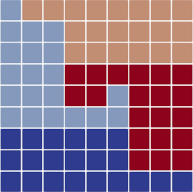
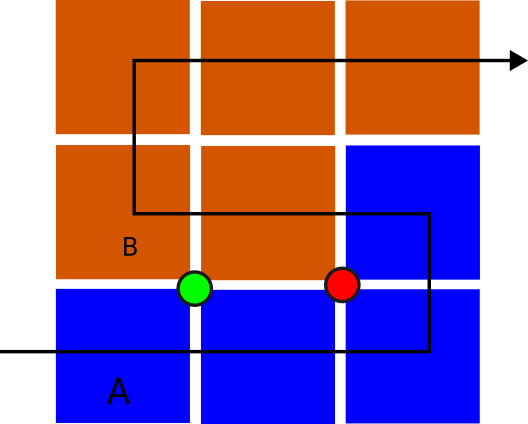

|
Peano
|
|
Peano
|
Peano uses one tree per MPI rank, a deterministic rank ownership map, and task-based subtree traversals within each rank. MPI is optional; the OpenMP task backend is always available.
Every rank hosts one peano4::topology::TopologyManager whose tree identifier equals the rank. The peano4::topology::Tree holds index-linked cell, face, and vertex arrays, and its ownership table assigns each cell to one rank. A traversal prunes a remote subtree when none of its entities touch the local rank.
A rank materialises the levels above the spawn level in full, because that spine carries the ownership decisions every rank needs. Below the spawn level it materialises only its own blocks plus one ring of neighbours; a query about any other region is answered from the refinement plan by lattice arithmetic and never from stored entities. The memory a rank holds therefore grows with its own block count, not with the global grid.
The plan makes geometry, adjacency, and communication order deterministic. Every rank derives them from the same domain, refinement plan, and rank count, so the two ranks that hold one boundary agree on the entity sequence without exchanging it. Solver data follows the same locality: each registered peano4::grid::StackContainer allocates flat pool slots for the entities needed by its rank, plus frozen boundary and task-interface copies.

The spawn level bounds the replicated spine and supplies the initial subtree task roots. Rank ownership follows weighted adaptive leaves in Peano-curve order. The partition descends recursively through a cell when every child is refined; a cell with any leaf child remains indivisible, preserving resolution-transition faces and coarsening families. Every rank derives the same packed ownership table without communication.
Cells have one owning rank. A face or vertex touched by cells from several ranks has one local entity slot on each participating rank and one frozen slot for every remote partner. Both sides of a rank pair materialise that entity because each keeps a ring of neighbour blocks. Pack lists sort the entities the two ranks hold by level, normal, and lattice key, so neither tree entity indices nor rank-local pool slots have to match.
A multithreaded standing sweep creates subtree tasks from local spawn-level blocks. Heavy refined regions contribute nested roots until the task sizes approach the traversal grain. The rank traversal covers the remaining spine. Tasks own observer clones and traversal scopes and may run concurrently.
Faces and vertices touched by several tasks receive task-local live and frozen slots. A task executes the complete first-touch and last-touch lifecycle on its live copy. The post-sweep merge freezes that result, and the following sweep merges partner copies before use.
A data container declares whether its records support this replication and merge protocol. If any registered container rejects subtree-task replication, the rank uses one serial traversal. Particle sets select this serial path.
The generated step calls prepareTraversal() once on each rank. The manager clones the observer for the rank traversal, and the traversal clones that observer for its subtree tasks. Each clone receives beginTraversal(), its entity callbacks, and endTraversal(). The generated step calls unprepareTraversal() after all clones finish.
Observer clone identifiers name a rank traversal or subtree task. They do not identify independent spacetrees. Output that needs the MPI owner uses the rank; output that analyses the thread decomposition records the subtree-task field.
After a sweep, each registered face or vertex container packs its local entity slots into one payload per neighbour rank. The non-blocking exchange writes received records into frozen slots. Interior subtree tasks of the following sweep can start while communication progresses; a boundary task waits before it merges those frozen copies.
The generated merge callback distinguishes peano4::stacks::SendReceiveContext::InterRank from peano4::stacks::SendReceiveContext::IntraRank. Both contexts carry partner state from the preceding sweep. Cell data has neither exchange because each cell has one owner.

A changed refinement plan can also change the leaf-weighted rank ownership. A stable single-owner transition appends or prunes the structural delta in place. Other transitions prepare the required union and target views and inherit pool slots for surviving entities. New entities fill available slot gaps, removed entities release their slots, and migration pairs move records only when their slots or owner ranks change.
When rank ownership moves, the transition first drains traffic that still targets the standing pools. It transfers the affected cell, face, and vertex slots to their target ranks, adopts the new communication topology, and refreshes the new rank-boundary frozen slots before another standing sweep can read them.
The two opposite entities on a periodic axis hold one tree index between them. A periodic wrap inside one rank therefore writes into one storage slot. A wrap that crosses rank ownership uses the ordinary inter-rank boundary exchange and its standard merge context. The exchange does not transform coordinates stored in a container payload, so the container has to establish its periodic coordinate representation before merging the record.
Action-set clones are transient and concurrent. Rank-wide state belongs in a persistent repository, solver, or service. Each clone accumulates into private state and commits from endTraversal() through a short protected reduction. MPI-wide values require an explicit collective at a point reached by every rank in the same program step.
Grid and memory statistics apply this pattern after each step. Application-specific values use the MPI wrappers described on MPI programming.
The Grid Snapshot reports leaves per rank, the MPI load balance, replicated spine cells, subtree-task counts, cells per task and the thread ceiling. Runtime analysis explains these fields.